half_count <- function(pages) {
count <- 0
while (pages > 1) {
pages <- ceiling(pages / 2) # 없는 쪽 절반을 버림
count <- count + 1
}
count
}
sapply(c(1000, 10000, 1e6), half_count)[1] 10 14 20코드가 요구하는 수행 시간과 메모리를 판단하기
충남대학교 정보통계학과
2026-10-01
알고리즘 암기가 아니라, 구현의 정확성과 수행 시간, 메모리 요구량을 판단하는 능력
| 절 | 내용 | |
|---|---|---|
| 1 | 알고리즘과 계산 비용 | 일상 속 알고리즘, 수행 시간, 메모리, 빅오 표기법 |
| 2 | 재귀 | 종료 조건, 계승, 하노이 탑 |
| 3 | 탐색 알고리즘 | 선형 탐색과 이진 탐색, 구현의 정확성 검증 |
| 4 | 정렬 알고리즘 | 정렬 네 가지(버블, 삽입, 병합, 퀵), 입력에 따른 비용 |
| 5 | 뉴턴-랩슨 알고리즘 | 점화식, 초기값 의존성, 회귀와 로지스틱 회귀의 계수 추정, 경사하강법 |
| 6 | AI와 함께 | 생성 코드의 검증 |
알고리즘 = 약속된 절차: 일상의 예에서 출발해 수행 시간과 메모리를 비교하는 기준을 세우는 절
결과가 같은 두 코드가 서로 다른 수행 시간, 메모리를 요구하는 이유와 그 차이를 비교하는 방법
이 절에서
이 절이 답하는 질문: 같은 결과를 내는 두 코드의 수행 시간과 메모리를 무엇으로 비교하는가?
방법 A, 한 쪽씩 넘기기
1,000쪽이면 최악 1,000번 확인
방법 B, 가운데 펼치기
1,000쪽이면 최대 10번 펼침
두 방법 모두 같은 결과, 확인하는 쪽수는 다름
방법 B 는 이름이 가나다순으로 정렬되어 있다는 약속이 있어야 가능 → 3절 이진 탐색
전화번호부가 10,000쪽이면 방법 B 는 최대 몇 번 펼쳐야 하는가?
A 약 5,000번
B 약 100번
C 약 14번
힌트: 한 번 펼칠 때마다 남은 쪽수가 절반으로 줄어듦
| 쪽수 | 방법 A | 방법 B |
|---|---|---|
| 1,000 | 1,000 | 10 |
| 10,000 | 10,000 | 14 |
| 1,000,000 | 1,000,000 | 20 |
쪽수가 10배가 되어도 방법 B 는 4번만 증가, 방법 A 는 쪽수에 정비례 → 3절 이진 탐색, \(\mathcal{O}(\log n)\)
사람에게 하는 말
“방을 깨끗이 청소해”: 로봇에게는 정해지지 않은 항목 셋
로봇에게 주는 약속된 절차
clean_room <- function(n_row, n_col) {
visit <- matrix(0L, n_row, n_col) # 청소 순서
step <- 0L
for (i in seq_len(n_row)) { # 1. 한 줄씩
cols <- seq_len(n_col)
if (i %% 2 == 0) cols <- rev(cols) # 3. 방향 반대로
for (j in cols) { # 2. 줄 끝까지
step <- step + 1L
visit[i, j] <- step
}
}
visit # 4. 멈춤
}
clean_room(4, 6) [,1] [,2] [,3] [,4] [,5] [,6]
[1,] 1 2 3 4 5 6
[2,] 12 11 10 9 8 7
[3,] 13 14 15 16 17 18
[4,] 24 23 22 21 20 19노트
알고리즘(algorithm): 문제를 해결하기 위해 약속된 일련의 절차, 입력이 같으면 누가 실행해도 같은 결과
| 조건 | 뜻 | 청소 로봇에서 |
|---|---|---|
| 명확성 | 각 단계가 모호하지 않음 | “깨끗이” 대신 “모든 칸을 한 번씩” |
| 유일성 | 다음 단계가 하나로 결정됨 | 줄 끝에서는 “아래로 한 칸, 방향 반대로”뿐 |
| 입력과 출력 | 정의된 입력을 받아 결과 산출 | 가로, 세로 칸 수 → 칸별 청소 순서 |
| 유한성 | 유한한 단계 뒤 반드시 종료 | 가로 × 세로 번 이동 후 종료 |
| 일반성 | 정의된 입력 전체에 대해 동작 | 크기가 다른 방은 가능, 가구 놓인 방은? |
이 장의 코드가 어기는 조건: 유한성(2절 재귀 합), 일반성(3절 이진 탐색)
“내 예제에서 동작” ≠ “정의된 입력 전체에서 동작”
유한성 위반, 오늘 2절
n = 0 이면 −1, −2, … 로 종료 조건을 지나쳐 내려가 멈추지 않음
청소 로봇의 “가구 놓인 방”과 같은 문제: 코드를 만든 사람이 떠올리지 못한 입력
이 수업에서 비용: 알고리즘이 요구하는 수행 시간과 메모리
수행 시간
메모리
“이 코드가 비싸다” = “연산 횟수가 많다” 또는 “메모리를 많이 잡는다”
둘 중 어느 쪽인지 항상 구분해서 말할 것
n 이 5만일 때 두 프로그램의 실행 시간 차이는?
A 비슷한 수준
B 두 배 정도
C 그보다 큼
실행 전에 답을 적을 것: 다음 슬라이드의 측정값과 대조
방식 초
1 사전 할당 0.003
2 이어 붙이기 3.372x <- c(x, i): 반복마다 길이가 1 늘어난 새 벡터를 할당하고 기존 원소 전부 복사
\(i\) 번째 반복에서 기존 원소 \(i-1\) 개 복사 → 전체 복사량 \(0 + 1 + \cdots + (n-1) = n(n-1)/2\) 에 비례
사전 할당: 이미 확보된 메모리에 값 대입, 반복당 연산 횟수 일정
노트
시간 복잡도(time complexity)
종료할 때까지 수행하는 연산 횟수
계수 대상: 사칙연산, 비교연산, 반복, 함수 호출
노트
공간 복잡도(space complexity)
종료할 때까지 필요한 메모리 크기
대상: 변수 개수, 자료 구조, 스택 프레임
| 수행 시간 | 메모리 | |
|---|---|---|
| 프로그램 1, 사전 할당 | \(n\) 에 비례 | 증가 없음 |
| 프로그램 2, 이어 붙이기 | \(n^2\) 에 비례 | \(n\) 까지 증가 |
평가 기준은 최악의 경우(worst case): 최선은 특정 입력에서만 성립, 평균은 입력 분포 가정 필요, 최악은 임의의 입력에 항상 성립하는 상한
노트
정의: 상수 \(C\), \(k\) 가 존재해
\(x \geq k\) 인 모든 \(x\) 에서 \(|f(x)| \leq C|g(x)|\)
\(\Rightarrow\) \(f(x) = \mathcal{O}(g(x))\), “\(f\) 는 \(g\) 의 빅오”
그림 읽기
\(n\) 이 충분히 커지면 저차항의 비중이 0 에 수렴, 증가율이 가장 큰 항만 남음
\(g\) 는 \(f\) 의 점근적 상한
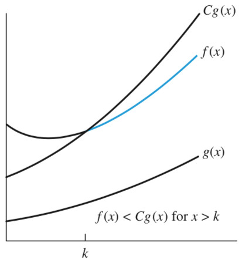
규칙 1, 계수 법칙
계수 소거
\(\mathcal{O}(5n) = \mathcal{O}(n)\)
반복이 \(5n\) 번이든 \(100n\) 번이든 모두 \(\mathcal{O}(n)\)
규칙 2, 합의 법칙
순차 실행 시 증가율이 큰 쪽만 잔존
\(\mathcal{O}(n) + \mathcal{O}(n^2) = \mathcal{O}(n^2)\)
단, 입력 변수가 다르면 \(\mathcal{O}(n + m)\)
규칙 3, 곱의 법칙
반복문 중첩 시 반복 횟수 곱
\(\mathcal{O}(n) \times \mathcal{O}(n) = \mathcal{O}(n^2)\)
case1 <- function(n) { # (가)
s <- 0; for (i in seq_len(n)) s <- s + i; s
}
case2 <- function(n) { # (나)
s <- 0; for (i in seq_len(5 * n)) s <- s + i; s
}
case3 <- function(n, m) { # (다)
s <- 0
for (i in seq_len(n)) s <- s + i
for (j in seq_len(m)) s <- s + j
s
}
case4 <- function(n) { # (라)
s <- 0; for (i in seq_len(n)) for (j in seq_len(n)) s <- s + j; s
}(가) \(\mathcal{O}(n)\)
(나) \(\mathcal{O}(5n) = \mathcal{O}(n)\): 규칙 1
(다) \(\mathcal{O}(n + m)\): 규칙 2의 단서
(라) \(\mathcal{O}(n^2)\): 규칙 3
코드 읽을 때 쓰는 것은 정의가 아니라 이 세 규칙: 반복이 몇 번 도는지만 세면 됨
| n | O(1) | O(log n) | O(n) | O(n log n) | O(n^2) | O(2^n) |
|---|---|---|---|---|---|---|
| 10 | 1 | 3 | 10 | 33 | 100 | 1,024 |
| 100 | 1 | 7 | 100 | 664 | 10,000 | 1.3e+30 |
| 1,000 | 1 | 10 | 1,000 | 9,966 | 1,000,000 | 1.1e+301 |
| 1,000,000 | 1 | 20 | 1,000,000 | 19,931,569 | 1e+12 | 9.9e+301029 |
| 차수 | 오늘 만나는 알고리즘 |
|---|---|
| \(\mathcal{O}(1)\) | 벡터 인덱싱 x[i], 사전 할당한 자리에 대입 |
| \(\mathcal{O}(\log n)\) | 이진 탐색 |
| \(\mathcal{O}(n)\) | 선형 탐색, 벡터 한 번 순회 |
| \(\mathcal{O}(n\log n)\) | 병합 정렬, R 의 sort() |
| \(\mathcal{O}(n^2)\) | 버블 정렬, c(x, i) 로 벡터 이어 붙이기 |
| \(\mathcal{O}(2^n)\) | 하노이 탑 |
\(n = 1{,}000\): \(\mathcal{O}(n)\) 대 \(\mathcal{O}(n^2)\) 천 배
\(n = 10^6\), 초당 10억 연산 가정
\(\mathcal{O}(n\log n)\) 0.02초 대 \(\mathcal{O}(n^2)\) 약 17분
컴퓨터가 100배 빨라져도 \(\mathcal{O}(n^2)\) 약 10초: 차수 차이는 하드웨어 성능 향상으로 메워지지 않음
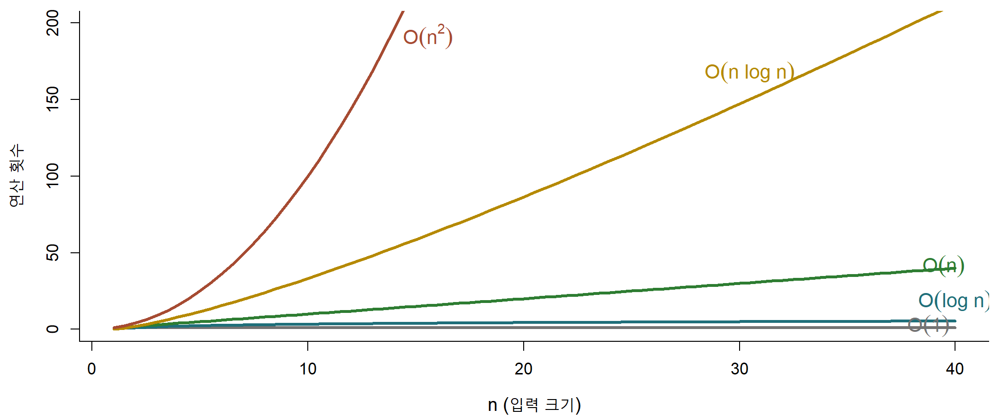
\(n = 40\) 에서 \(\mathcal{O}(n)\) 은 40, \(\mathcal{O}(n^2)\) 은 1,600: 세로축 상한 200 을 \(n = 15\) 에서 넘음
함수가 자기 자신을 호출해 문제를 같은 모양의 작은 문제로 줄이는 방법
종료 조건이 틀리면 멈추지 않음: n == 1 과 n <= 1 의 차이
이 절에서
이 절이 답하는 질문: 이 재귀는 반드시 멈추는가?
일반 함수 호출
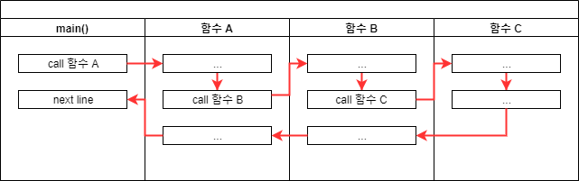
호출 지점으로 복귀
재귀 호출
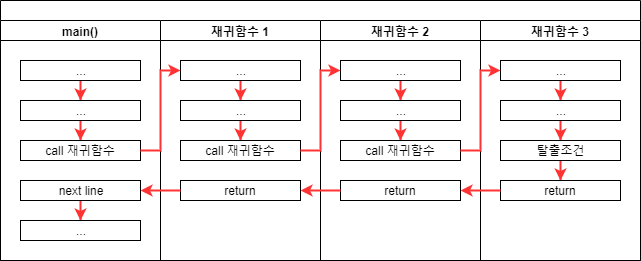
복귀 지점이 자기 자신
호출마다 호출 스택(call stack) 에 새 프레임 누적 → 중단 조건 없으면 종료되지 않음
recursive_sum(0) 의 반환값은?
A 0
B 1
C 오류
방금 확인: recursive_sum(3) 은 정답 6 반환
그런데 “정의된 입력 전체”에 대해서도 그러한가?
힌트: 알고리즘의 다섯 조건 중 유한성
오류: evaluation nested too deeply: infinite recursion / options(expressions=)? n 이 0이면 n == 1 은 결코 참이 되지 않음0, -1, -2, ... 로 계속 감소 → R 의 중첩 한계에 도달해서야 중단n 이 1 이하일 때”[1] 500500오류: evaluation nested too deeply: infinite recursion / options(expressions=)? 재귀
options(expressions), 기본 5000반복문
재귀: 점화식을 그대로 옮길 수 있는 대신 호출 깊이만큼 메모리 사용
재귀로 먼저 구조를 확인하고, 깊이가 중첩 한계(기본 5000)에 가까우면 반복문으로 변환
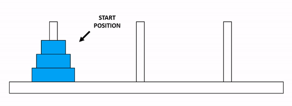
규칙
해법: 한 단계 작은 동일 문제로 환원
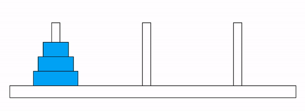
원판 1: A -> C
원판 2: A -> B
원판 1: C -> B
원판 3: A -> C
원판 1: B -> A
원판 2: B -> C
원판 1: A -> C이동 횟수 \(2^n - 1\): 호출이 매 단계 두 개로 분기 → \(\mathcal{O}(2^n)\)
원판 64개 = 1초에 하나씩 옮겨도 5천억 년 초과
구현이 맞는지 확인하는 절
모든 원소를 넣어 보는 검사로 재귀 이진 탐색의 결함 확인, 선형 탐색과 이진 탐색의 비교 횟수를 수치로 대조
이 절에서
이 절이 답하는 질문: 이 구현이 맞다는 것을 무엇으로 아는가?
선형 탐색, \(\mathcal{O}(n)\)

아래 재귀 구현에 벡터의 모든 원소를 입력하면 몇 개나 정확히 찾아내는가?
전수 검사: 벡터의 모든 원소를 차례로 목표값으로 입력
전체 찾지_못함
20 8 원인: 첫 줄의 if (maxL <= minL) return(NA_integer_)
탐색 범위가 원소 하나로 좁혀지면 minL == maxL → 남은 원소를 검사하지 않고 종료
범위가 실제로 비는 조건은 minL > maxL
rbinary_search2 <- function(target, ovec, lo = 1L, hi = length(ovec)) {
if (lo > hi) return(NA_integer_) # 탐색 범위가 비었을 때만 종료
mid <- (lo + hi) %/% 2L
if (ovec[mid] == target) mid
else if (ovec[mid] > target) rbinary_search2(target, ovec, lo, mid - 1L)
else rbinary_search2(target, ovec, mid + 1L, hi)
}
all(vapply(seq_along(x), function(i) as.integer(rbinary_search2(x[i], x)),
integer(1)) == seq_along(x))[1] TRUErbinary_search(): 문법 오류 없음, 오류 메시지 없음, 저자가 고른 예제에서는 정답 반환. 그럼에도 20개 중 8개를 못 찾는 잘못된 구현
이런 결함은 오류 메시지가 아니라 검증 절차로만 발견됨
→ 전수 검사, 경계 사례 검토, 정답이 알려진 기준과의 대조
실행 시간 대신 연산 횟수를 계수 → 하드웨어 성능과 무관한 값
| n | 선형 | 이진 |
|---|---|---|
| 100 | 50.5 | 5.8 |
| 1,000 | 477.0 | 8.8 |
| 10,000 | 5250.9 | 12.4 |
\(n\) 100배 증가 → 선형 약 100배, 이진 두 배 남짓
\(n = 10^6\): 선형 평균 50만 회, 이진 약 20회
정렬 비용까지 더하면 이진 탐색의 비교 횟수가 항상 적지는 않음
네 가지를 두 쌍으로 묶어 비교
쌍과 쌍 사이: 차수의 차이
쌍 안에서: 입력 상태에 따른 차이
이 절에서
이 절이 답하는 질문: 차수의 차이와 입력 상태의 차이로 비교 횟수가 몇 배 달라지는가?

x[j] > x[j + 1] 이면 교환
x[1:(i-1)] 이 손에 쥔 카드, key 가 새 카드j >= 1 &&: x[0] 과의 비교를 막는 경계 검사smerge <- function(left, right) {
temp <- numeric(length(left) + length(right))
l <- r <- 1L
for (i in seq_along(temp)) {
if (r > length(right) ||
(l <= length(left) && left[l] <= right[r])) {
temp[i] <- left[l]; l <- l + 1L
} else {
temp[i] <- right[r]; r <- r + 1L
}
}
temp
}
merge_sort <- function(x) {
n <- length(x)
if (n <= 1) return(x) # 종료 조건
mid <- n %/% 2L
smerge(merge_sort(x[1:mid]), merge_sort(x[(mid + 1):n]))
}
분할 정복(divide and conquer)
smerge())나누는 과정, 입력 c(5, 3, 8, 1, 9, 2, 7)
[3 1 2] 5 [8 9 7]
[1 2] 3 []
[] 1 [2]
[7] 8 [9]x[x < pivot], x[x > pivot])c() 로 이어 붙이기뿐출력 한 줄: [작은 무리] 기준값 [큰 무리]
들여쓰기: 재귀 깊이
무리가 대략 절반씩 줄어듦 → 깊이 약 \(\log_2 n\) → 평균 \(\mathcal{O}(n \log n)\)
이미 정렬된 1:6 을 넣으면 나누는 과정은 어떤 모양일까?
A 무작위 입력처럼 두세 단계에서 끝남
B 한쪽으로만 쌓이는 다섯 단계 계단
C 이미 정렬되어 있으므로 한 단계로 끝남
힌트: 정렬된 입력에서 첫 원소는 그 무리에서 몇 번째로 작은 값인가?
quick_trace(1:6) 출력
[] 1 [2 3 4 5 6]
[] 2 [3 4 5 6]
[] 3 [4 5 6]
[] 4 [5 6]
[] 5 [6]같은 5,000개, 순서만 다름
[1] TRUE[1] "node stack overflow"정렬된 5,000개: 재귀가 4,999 단계까지 쌓이기 전에 R 의 한계에 닿음
오류 메시지: 여기는 node stack overflow
2.2절은 evaluation nested too deeply
닿은 한계가 달라 메시지가 다를 뿐, 원인은 같은 호출 깊이
기준값을 고르는 규칙이 최악의 입력을 정함: 가운데 원소나 무작위 선택이면 정렬된 입력이 최악이 아님
원소 수를 두 배로 늘리면 네 정렬의 비교 횟수는 몇 배?
버블, 삽입: O(n²)
\[n^2 \;\longrightarrow\; (2n)^2\]
병합, 퀵: O(n log n)
\[n\log_2 n \;\longrightarrow\; 2n\log_2(2n)\]
A 넷 다 두 배
B 버블과 삽입 약 네 배, 병합과 퀵 두 배 남짓
C 넷 다 네 배
실행 시간이 아니라 비교 횟수로 재는 이유: 시간은 하드웨어, 부하에 따라 변동, 병합과 퀵은 0.02초 아래로 측정되어 증가율이 측정 오차에 묻힘
| n | 버블 | n(n-1)/2 | 삽입 | n²/4 | 병합 | 퀵 | n log₂n |
|---|---|---|---|---|---|---|---|
| 500 | 124,750 | 124,750 | 64,544 | 62,500 | 3,872 | 4,645 | 4,483 |
| 1,000 | 499,500 | 499,500 | 253,599 | 250,000 | 8,688 | 10,277 | 9,966 |
| 2,000 | 1,999,000 | 1,999,000 | 990,270 | 1,000,000 | 19,406 | 24,797 | 21,932 |
실행 시간(초)도 같은 방향
| n | 버블 | 삽입 | 병합 | 퀵 |
|---|---|---|---|---|
| 500 | 0.025 | 0.016 | 0.016 | 0.001 |
| 1,000 | 0.084 | 0.030 | 0.008 | 0.002 |
| 2,000 | 0.266 | 0.155 | 0.028 | 0.004 |
측정값은 환경에 따라 변동: 그래서 배율은 비교 횟수로 판단
\(n\) 두 배 → 버블과 삽입 약 네 배, 병합과 퀵 두 배 남짓
버블 = \(n(n-1)/2\) 정확히 일치, 삽입 ≈ \(n^2/4\)
병합은 \(n\log_2 n\) 의 약 0.9배, 퀵은 약 1.0–1.1배: 계수만 다름
이론적으로 분석한 복잡도가 실제 연산 횟수와 일치하는지 확인하는 것도 검증
비교 횟수, n = 1,000
| 입력 | 버블 | 삽입 | 병합 | 퀵 |
|---|---|---|---|---|
| 무작위 | 499,500 | 256,416 | 8,730 | 10,569 |
| 정렬됨 | 499,500 | 999 | 4,932 | 499,500 |
| 역순 | 499,500 | 499,500 | 5,044 | 499,500 |
정렬된 입력: 삽입 999회 (최선), 퀵 499,500회 (최악)
역순 입력: 삽입도 499,500회 (최악), 병합만 입력과 무관하게 \(n \log_2 n\) 이하
네 정렬의 차수, 이 장의 구현 기준
| 정렬 | 최선 | 평균 | 최악 | 추가 메모리 |
|---|---|---|---|---|
| 버블 | \(n^2\) | \(n^2\) | \(n^2\) | \(1\) |
| 삽입 | \(n\) | \(n^2\) | \(n^2\) | \(1\) |
| 병합 | \(n \log n\) | \(n \log n\) | \(n \log n\) | \(n\) |
| 퀵 | \(n \log n\) | \(n \log n\) | \(n^2\) | \(n\) (최악 \(n^2\)) |
비교 횟수를 말할 때는 어떤 입력에서의 값인지 함께: 평가 기준이 최악의 경우인 이유 (1.3절)
R 의 sort() 기본값은 이 넷이 아닌 기수 정렬(radix sort, 원소끼리 비교하지 않음), method = "quick" 으로 퀵 정렬 지정 가능
값을 찾거나 정렬하는 대신 방정식의 해를 계산하는 알고리즘
\(f(x) = 0\) 의 해를 반복 계산으로 근사
통계의 추정은 대부분 최적화 문제: 최소제곱, 최대가능도. 최소, 최대인 점에서 도함수가 0 → 결국 방정식의 해를 찾는 문제
이 절에서
polyroot() 와 대조이 절이 답하는 질문: 이 값이 내가 찾던 해인가?
\(f(x) = 0\) 을 만족하는 \(x\) 를 반복 계산으로 근사
\[x_{n+1} = x_n - \frac{f(x_n)}{f'(x_n)}\]
종료 조건: 최대 반복 횟수 초과 / \(x\) 갱신 폭이 허용 오차보다 작음 / \(|f(x)|\) 가 허용 오차 이내
f <- function(x) 5 * x^3 - 7 * x^2 - 40 * x + 100
unlist(newton_raphson(f, x0 = 1, range = c(-10, 10))) solution iteration value
-3.151719e+00 1.300000e+01 -3.544187e-11 검증: 3차 다항식이므로 polyroot() 로 모든 근을 구해 대조 가능
[1] -3.151719| 초기값 | 해 | 반복 |
|---|---|---|
| -5 | -3.151719 | 6 |
| -1 | -3.151719 | 34 |
| 0 | -3.151719 | 19 |
| 1 | -3.151719 | 13 |
| 5 | -3.151719 | 50 |
주의
반복 횟수와 도달하는 해가 초기값에 따라 달라짐
결과를 얻은 뒤 반드시 확인: 그 값이 실제로 해인지, 그리고 의도한 해가 맞는지
극값에서 접선은 수평 → \(f'(x) = 0\) 의 근 찾기
\[x_{n+1} = x_n - \frac{f'(x_n)}{f''(x_n)}\]
5 * (3 * x^2) - 7 * (2 * x) - 40모수가 여러 개면: \(f'\) → 기울기 벡터 \(\nabla f\), \(f''\) → 헤세 행렬 \(\mathbf{H}\), 나눗셈 → solve(H, g)
같은 f 의 극값 찾기, 초기값 다섯 개
| 초기값 | 해 | 반복 | f’’(해) | 판정 |
|---|---|---|---|---|
| -5 | -1.2317 | 7 | -50.95 | 극대 |
| -1 | -1.2317 | 5 | -50.95 | 극대 |
| 0 | -1.2317 | 7 | -50.95 | 극대 |
| 1 | 2.1650 | 7 | 50.95 | 극소 |
| 5 | 2.1650 | 7 | 50.95 | 극소 |
주의
\(f'(x) = 0\) 은 극값의 후보일 뿐
mpg 를 wt 로 설명, 잔차제곱합 최소화
\[S(\boldsymbol\beta) = (\mathbf{y} - \mathbf{X}\boldsymbol\beta)^\top(\mathbf{y} - \mathbf{X}\boldsymbol\beta)\]
\[\nabla S = -2\mathbf{X}^\top(\mathbf{y} - \mathbf{X}\boldsymbol\beta), \quad \mathbf{H} = 2\mathbf{X}^\top\mathbf{X}\]
점화식에 대입하면 초기값이 소거됨
\[\boldsymbol\beta_1 = (\mathbf{X}^\top\mathbf{X})^{-1}\mathbf{X}^\top\mathbf{y}\]
정규방정식 \(\mathbf{X}^\top\mathbf{X}\boldsymbol\beta = \mathbf{X}^\top\mathbf{y}\) 의 해: 원래 2차 함수이므로 한 걸음에 끝남
am: 자동 0, 수동 1 → 수동일 확률을 무게로 설명
\[p_i = \frac{1}{1 + \exp\{-(\beta_0 + \beta_1 x_i)\}}\]
로그가능도를 최대화
\[\ell(\boldsymbol\beta) = \sum_i \{ y_i \log p_i + (1 - y_i)\log(1 - p_i) \}\]
\[\nabla\ell = \mathbf{X}^\top(\mathbf{y} - \mathbf{p}), \quad \mathbf{H} = -\mathbf{X}^\top\mathbf{W}\mathbf{X}\]
\(\mathbf{W} = \mathrm{diag}\{p_i(1-p_i)\}\)
\(\mathbf{H}\) 안에 \(\boldsymbol\beta\) 가 있음 → 걸음마다 달라짐 → 반복 필요
logistic_nr <- function(X, y, beta = rep(0, ncol(X)),
tol = 1e-8, max_iters = 50) {
for (iter in seq_len(max_iters)) {
p <- as.vector(1 / (1 + exp(-X %*% beta)))
g <- t(X) %*% (y - p) # 기울기
H <- -t(X) %*% (X * (p * (1 - p))) # 헤세 행렬
step <- as.vector(solve(H, g))
beta <- beta - step
if (max(abs(step)) < tol) break
}
list(beta = beta, iter = iter)
}
logistic_nr(X, mtcars$am)$beta
[1] 12.04037 -4.02397
$iter
[1] 8glm() 대조(0, 0) 에서 출발한 반복
| 반복 | b0 | b1 | 로그가능도 | 갱신폭 |
|---|---|---|---|---|
| 1 | 4.169774 | -1.412627 | -12.754697 | 4.2e+00 |
| 2 | 7.583020 | -2.571314 | -10.288202 | 3.4e+00 |
| 3 | 10.459826 | -3.516911 | -9.656860 | 2.9e+00 |
| 4 | 11.822764 | -3.954885 | -9.589224 | 1.4e+00 |
| 5 | 12.036073 | -4.022616 | -9.588043 | 2.1e-01 |
| 6 | 12.040368 | -4.023969 | -9.588042 | 4.3e-03 |
| 7 | 12.040370 | -4.023970 | -9.588042 | 1.7e-06 |
| 8 | 12.040370 | -4.023970 | -9.588042 | 2.7e-13 |
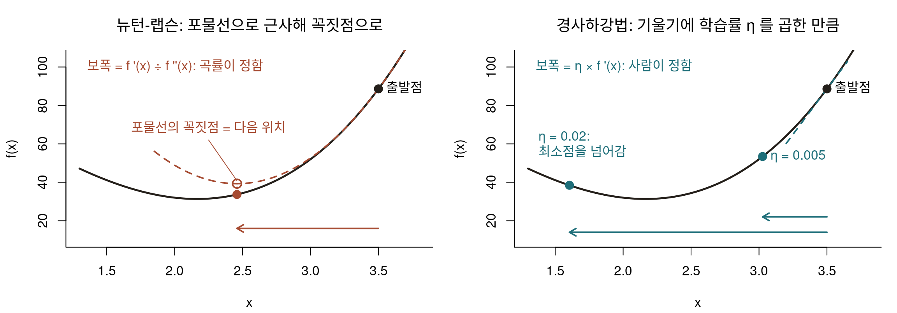
뉴턴-랩슨: 보폭 = f’(x) ÷ f’’(x), 곡률로 정해짐, 4걸음
경사하강법: 보폭은 학습률 η, 0.005 는 47걸음, 0.04 는 도착 못 함
뉴턴-랩슨이 한 걸음에 푼 회귀계수: 경사하강법으로는 몇 걸음?
\[\boldsymbol\beta_{n+1} = \boldsymbol\beta_n - \eta\,\nabla f(\boldsymbol\beta_n)\]
A 10걸음 안쪽
B 100걸음 안쪽
C 1,000걸음 이상
경사하강법: 곡률(\(\mathbf{H}\))을 쓰지 않고, 기울기의 반대 방향으로 정해 둔 보폭 \(\eta\) 만큼씩 이동
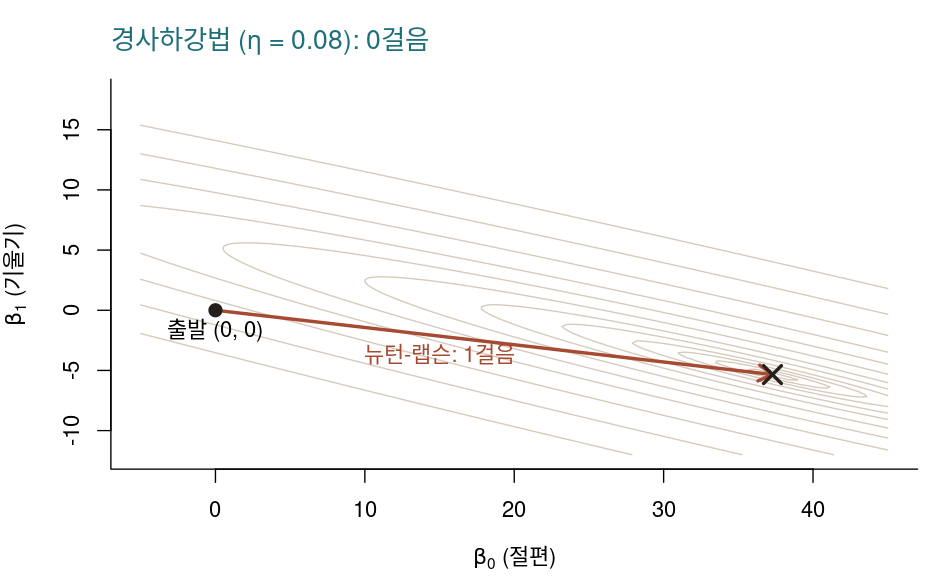
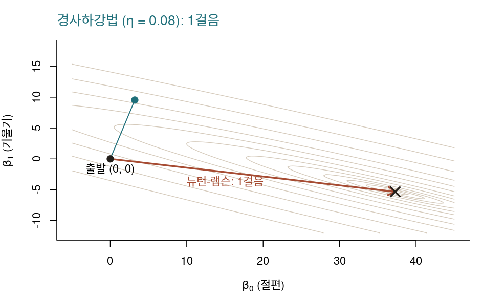
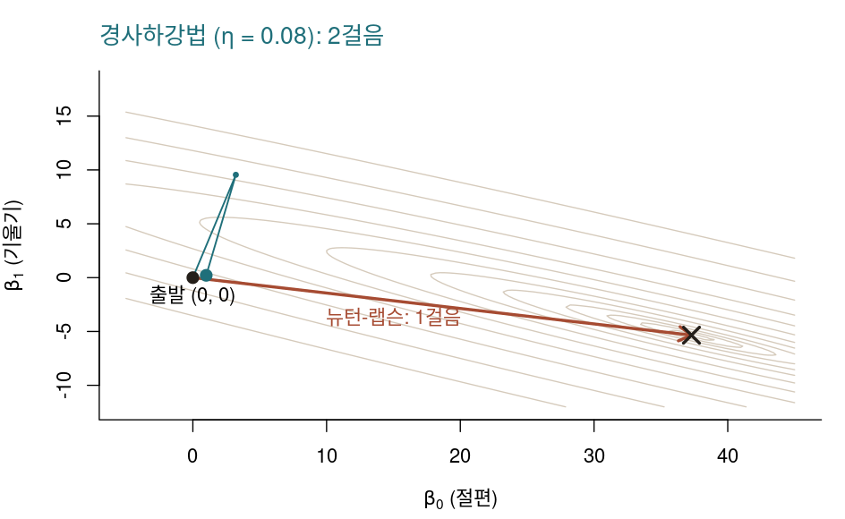
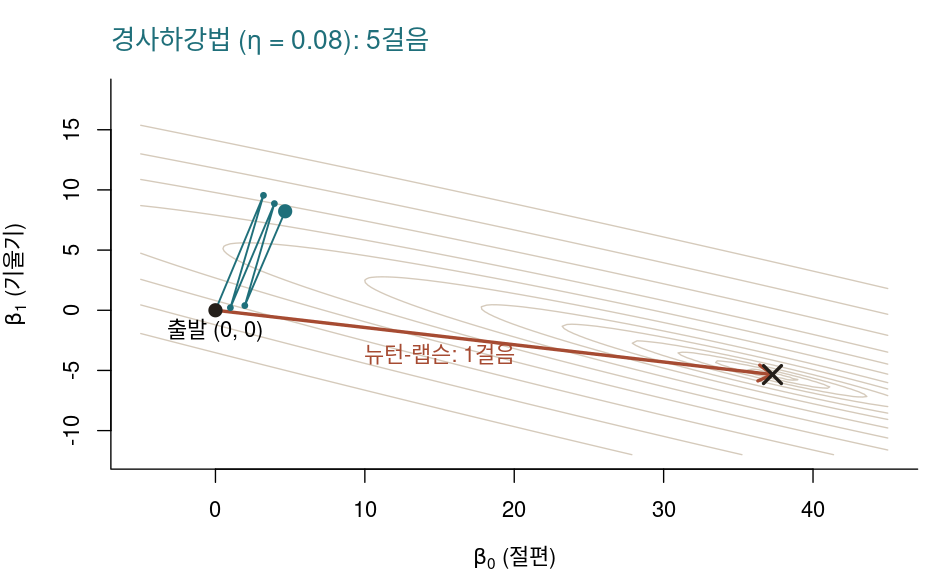
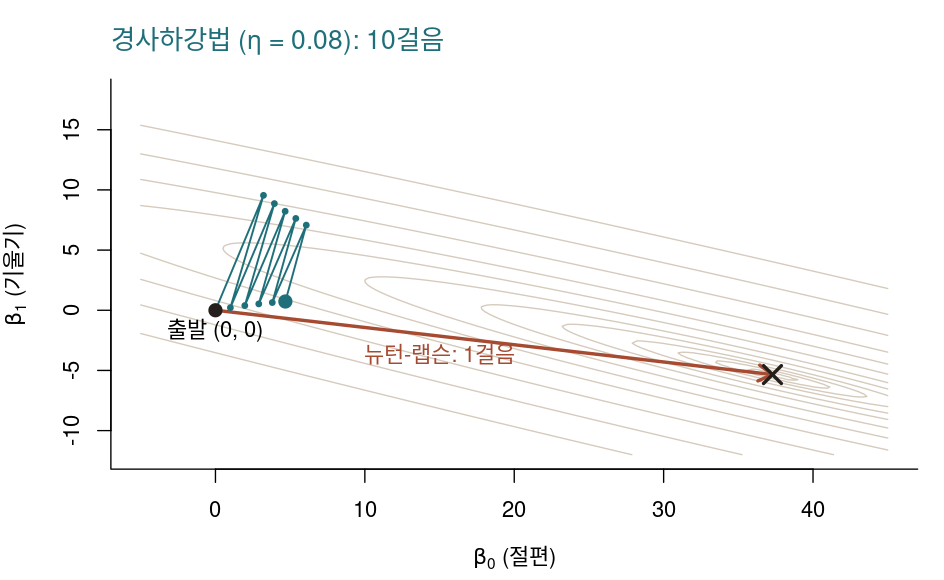
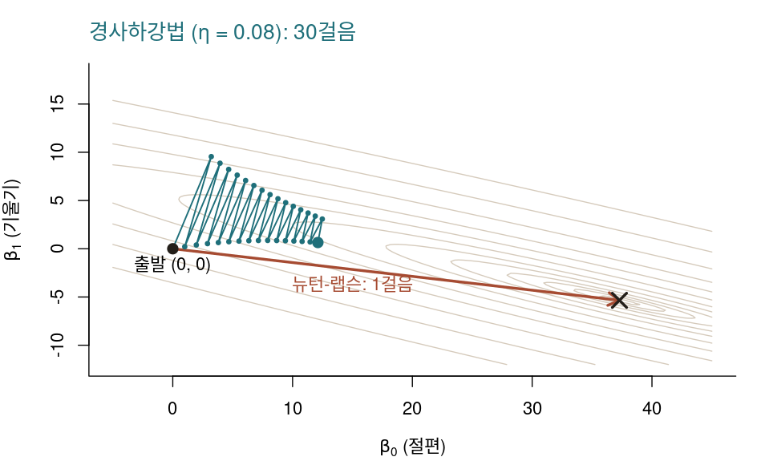
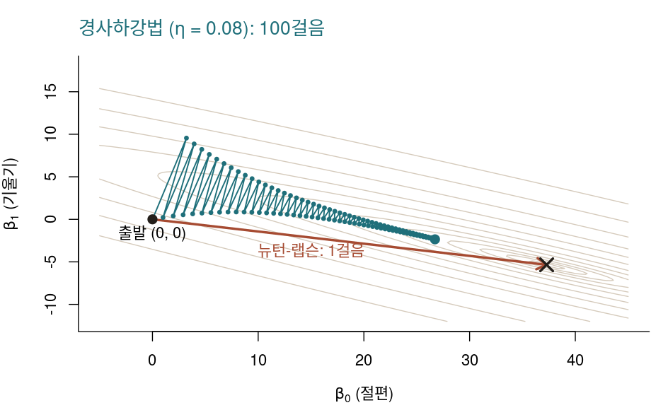
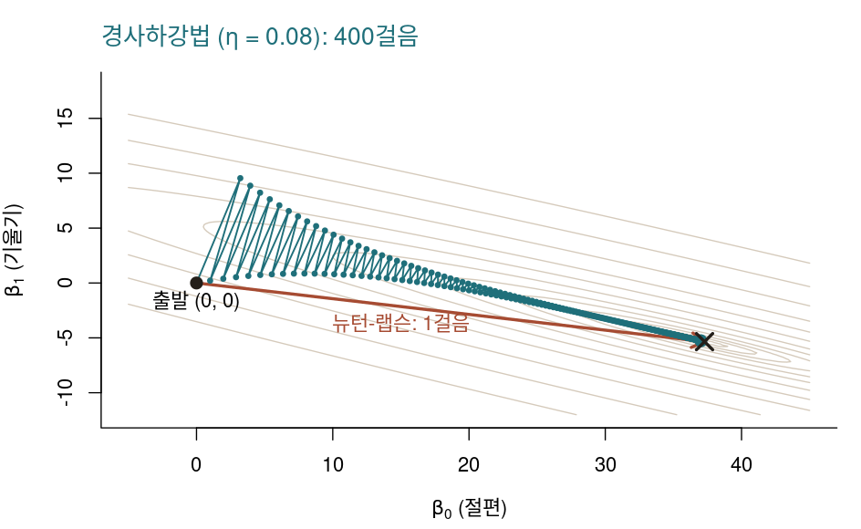
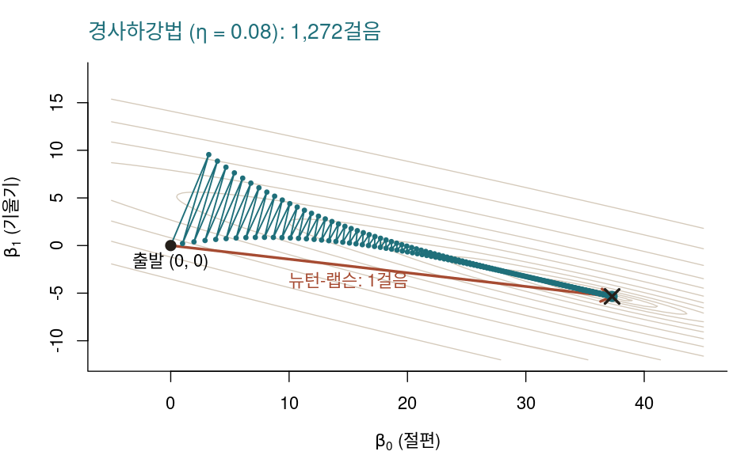
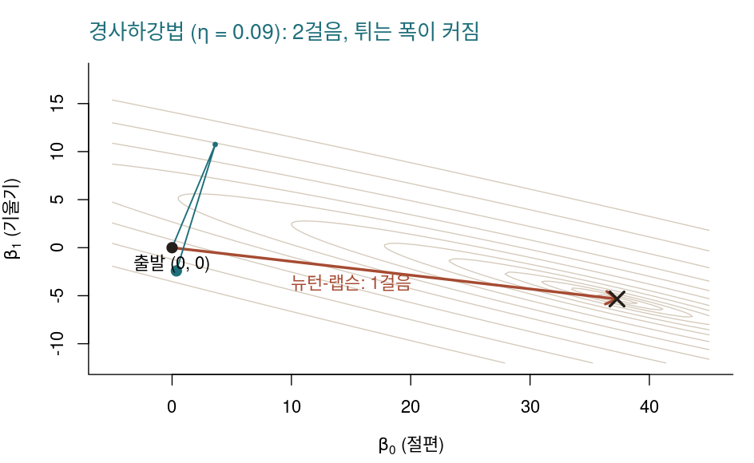
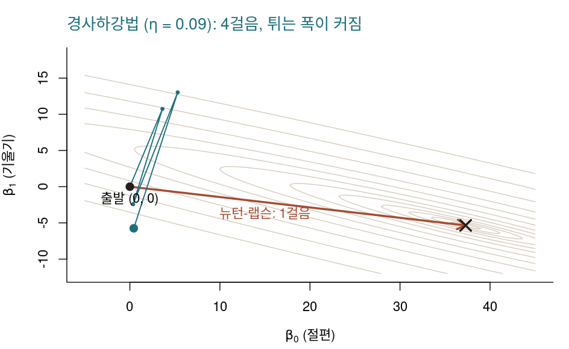
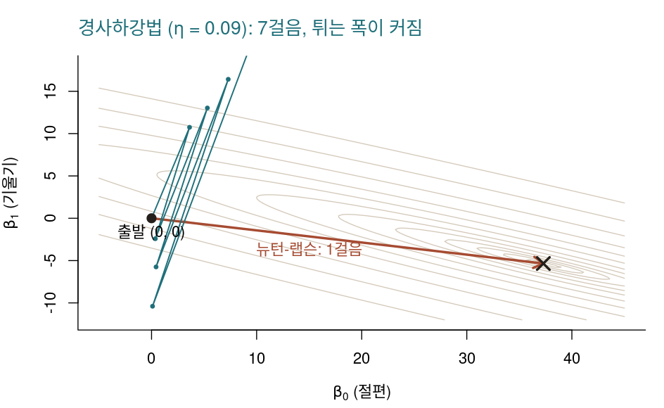
같은 회귀, 평균제곱오차의 등고선, × 는 최소점
뉴턴-랩슨: 곡률로 골짜기 모양을 알아 1걸음
경사하강법 1걸음: 가장 가파른 방향은 최소점이 아니라 맞은편 벽
좁은 골짜기를 지그재그로 가로지르며 조금씩
1,272걸음 만에 도착: 정답은 C
η 를 0.08 에서 0.09 로 키우면 튀는 폭이 점점 커져 7걸음 만에 그림 밖으로: 발산
비유: 안개 낀 산에서 발밑의 경사(1계 도함수)만 보고 한 걸음씩 내려가기
\(\eta\): 학습률(learning rate), 보폭을 사람이 정함
같은 회귀, 평균제곱오차 최소화, (0, 0) 출발
| 학습률 | 걸음 | b0 | b1 |
|---|---|---|---|
| 0.01 | 10,224 | 37.2851 | -5.3445 |
| 0.05 | 2,040 | 37.2851 | -5.3445 |
| 0.08 | 1,272 | 37.2851 | -5.3445 |
| 0.09 | 발산 |
뉴턴-랩슨은 1걸음, lm() 결과는 37.2851과 −5.3445
| 뉴턴-랩슨 | 경사하강법 | |
|---|---|---|
| 도함수 | 1계 + 2계 | 1계만 |
| 한 걸음의 비용 | \(p \times p\) 행렬, 연립방정식 | 길이 \(p\) 벡터 |
| 걸음 수, 이 회귀 | 1 | 1,272 (η = 0.08) |
| 정할 값 | 초기값 | 초기값 + 학습률 |
| 쓰는 곳 | glm() 등 통계모형 |
기계학습, 딥러닝 |
LLM 의 모수는 수십억 개 → \(\mathbf{H}\) 원소는 그 제곱인 10¹⁸ 개 이상, 저장 불가 → 경사하강법의 변형으로 학습
걸음 수 대 한 걸음의 계산량과 메모리: 모수가 적으면 뉴턴-랩슨, \(\mathbf{H}\) 를 저장할 수 없을 만큼 많으면 경사하강법
3절의 검증 절차를 AI 생성 코드에 그대로 적용
검증 절차: 전수 검사, 경계 사례, 정답이 알려진 함수와 대조
이 절에서
이 절이 답하는 질문: 세 가지 검증을 통과한 생성 코드는 요구사항에 없는 입력에서 어떻게 동작하는가?
중요
작업 요구사항
오름차순으로 정렬된 수치형 벡터
vec과 값target을 받아,target이 있으면 그 위치를, 없으면NA를 반환하는 재귀 이진 탐색 함수를 R 로 작성하라.
# 생성: Claude Opus 5, 2026-09-11. 수정 없이 그대로 수록.
binary_search_rec <- function(vec, target, lo = 1, hi = length(vec)) {
if (lo > hi) return(NA_integer_)
mid <- (lo + hi) %/% 2
if (vec[mid] == target) return(mid)
else if (vec[mid] > target) binary_search_rec(vec, target, lo, mid - 1)
else binary_search_rec(vec, target, mid + 1, hi)
}rbinary_search2() 와 동일한 구조lo > hi 로 올바름v <- seq(1, 40, by = 3)
# 1. 전수 검사
c1 <- all(vapply(seq_along(v), function(i) as.integer(binary_search_rec(v, v[i])),
integer(1)) == seq_along(v))
# 2. 경계 사례: 빈 벡터, 길이 1인 벡터, 존재하지 않는 값
c2 <- all(is.na(c(binary_search_rec(numeric(0), 5), binary_search_rec(7, 9))))
# 3. 무작위 대조: 정답이 알려진 which() 와 500회 대조
set.seed(20260911)
c3 <- all(replicate(500, {
w <- sort(sample(1:200, sample(1:60, 1)))
k <- sample(1:200, 1)
got <- binary_search_rec(w, k); want <- which(w == k)
if (length(want) == 0) is.na(got) else (!is.na(got) && got %in% want)
}))
c(전수검사 = c1, 경계사례 = c2, 무작위대조 = c3) 전수검사 경계사례 무작위대조
TRUE TRUE TRUE 세 가지 검증 모두 통과 → 요구사항의 범위 안에서는 이 코드가 옳음
이_구현 R의_match
3 2 반환 실제_위치
NA 1 미규정 1, 중복값
어느 위치를 반환할지 요구사항에 없음
→ 구현이 임의로 결정 (match() 는 가장 앞, 이 구현은 중간)
미규정 2, 정렬되지 않은 입력
전제가 깨졌을 때의 동작 규정 없음
→ 오류도 경고도 없이 “없다”고 반환
오류 없이 잘못된 결과를 반환하면 그 값이 다음 분석에 그대로 쓰임: 명시적으로 실패하면 그 자리에서 멈춰 알아챌 수 있음
주의
< 와 <=, mid 와 mid - 1 혼동NA 가 없다” 등 미확인이 장의 rbinary_search(), 중복값, 정렬 안 된 입력: 오류 메시지 없이 결과 반환
NA 가 든 입력만 오류로 멈춤 → 실행만으로는 발견 불가, 검증 절차 필요
| 오류 유형 | 이 검증에서 잡힘 |
|---|---|
| 경계 조건 | 전수 검사: 모든 원소를 넣어 보면 40% 실패(20개 중 8개) |
| 전제 미검사 | 경계 사례: 정렬 안 된 입력을 일부러 넣어 봄 |
| 빈 입력 | 경계 사례: 길이 0, 길이 1 |
| 요구사항의 공백 | 정답이 알려진 기준과 대조: which(), match() 와 비교 |
비용 = 수행 시간 + 메모리
재귀
최적화
검증
AI와 함께
다음 시간: 이 검증 절차를 시뮬레이션으로 확장